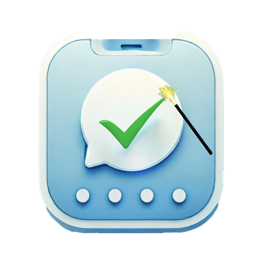

Visitor Magic
Effortless visitor follow-up—so easy, it feels like magic!
Visitor Magic is a simple, low-cost solution designed for churches, ministries, and small businesses to connect with visitors instantly. Developed over years in a local church, it fills the gap for a fast, personal follow-up system.
How It Works:
- Visitors fill out a digital card via QR code, tablet, or kiosk using Google Forms.
- Their information is stored in Google Sheets (free and reliable).
- Open the app, see the day’s visitors, and send a personalized message in three taps:
- Open the app
- Select a visitor
- Send the message
- You can also import visitors from the last 30 days into your contacts in just two taps.
Why Choose Visitor Magic?
- Budget-friendly – A one-time purchase of only $5. No subscriptions.
- Customizable – Use our free templates and add any extra questions.
- Fast & Reliable – Uses Google’s proven Forms and Sheets for data storage.
Get Started Today
Download the free templates and set up your visitor card.
Download Templates
Get the App